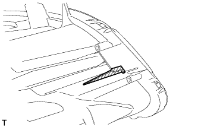
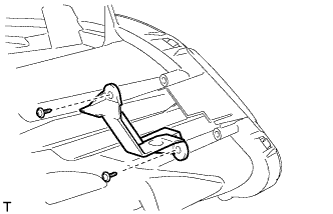

If only the headlight unit LH installation part is damaged, it can be repaired inexpensively as follows using a repair bracket. However, this applies only when the headlight assembly LH body is not damaged.

After cutting off the shaded area in the illustration, shape it with sandpaper or similar.
■ NOTICE ■
After roughly cutting off the shaded area, hold the headlight bracket lower LH against the installation boss, gradually shave off the interfering portions, and finish them to a shape that allows installation.

Install the headlight bracket lower LH with the 2 screws.